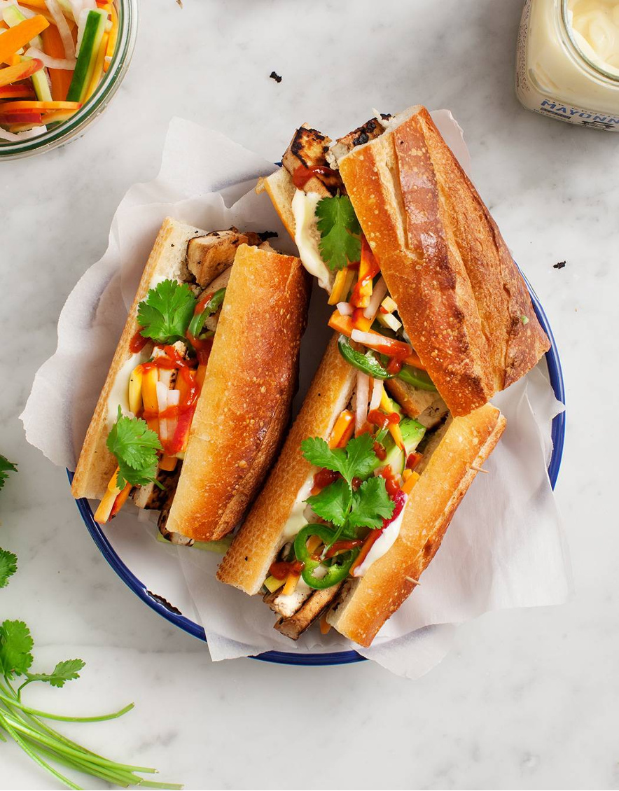

Bahn-Mi

Ingredients
- 1 (14-ounce) package extra-firm tofu
- Extra-virgin oil for the pan
- 4 baguette pieces, sliced in half
- Spicy Mayo
- Fresh cilantro
- Pickled Veggies (see instructions)
Pickled Veggies Ingredients:
- 1 small daikon radish, sliced into matchsticks
- 2 small carrots, sliced into matchsticks
- ½ small cucumber, seeded and sliced into matchsticks
- ½ jalapeño pepper, thinly sliced
- ⅓ cup rice vinegar, plus more as needed
- ⅓ cup water, plus more as needed
- Cane Sugar
- Sea salt
Tofu Marinade Ingredients:
- 1 tablespoon olive oil
- 2 tablespoons tamari
- Juice of ½ lime
- ½ teaspoon lime zest
- 1 garlic clove, minced
- ½ teaspoon minced fresh ginger
- Freshly ground black pepper
Instructions
- Make the pickles ahead: Place the daikon, carrots, cucumbers, and jalapeños in a medium jar with the vinegar and water and pinches of sugar and salt. If the liquids don’t cover the veggies, add more water and vinegar if necessary. Let chill for at least an hour, or store in the fridge for up to a week.
- Drain the tofu and slice it into ½-inch slices. Place it on a towel and gently pat dry to remove excess water.
- Make the marinade: In a small bowl, whisk together the olive oil, tamari, lime juice and zest, garlic, ginger, and pepper.
- Place the tofu in a shallow pan and pour the marinade on top. Flip the tofu to fully coat it, adding more tamari if necessary. Let the tofu marinate for at least 15 minutes.
- Heat a nonstick skillet to medium-high heat. Add a little oil to the pan and place the tofu pieces with enough space between each so that they’re not too crowded, working in batches if necessary. Without moving the tofu slices around too much, let them cook for a few minutes per side until they’re deeply golden brown and caramelized around the edges. Remove from heat and season to taste.
- Assemble sandwiches on the baguette with the spicy mayo, tofu slices, pickled veggies, and cilantro. Enjoy!
Servings
4 servings
Back to Recipes